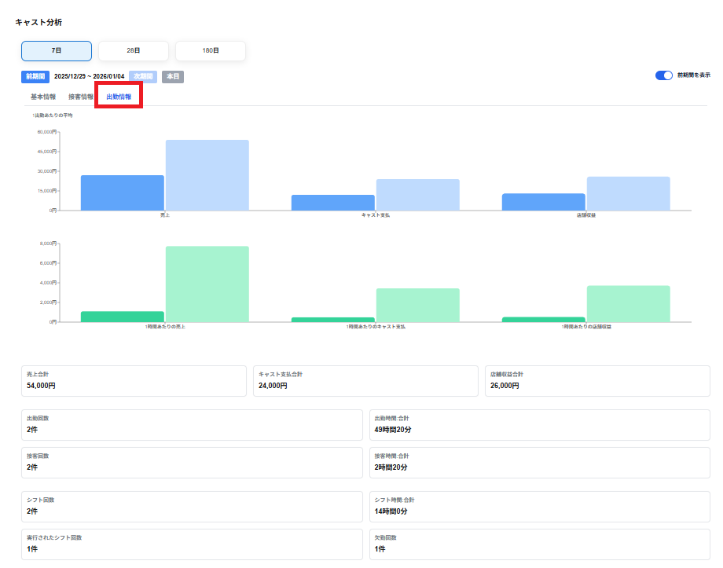

出勤情報のタブには以下の項目が出勤1件あたりの平均で表示されます。
・売上
売上の1時刻あたりの平均が表示されます。
売上＝売上合計 ÷ 出勤回数で算出されます。
・キャスト支払
キャスト支払の1時刻あたりの平均が表示されます。
キャスト支払＝キャスト支払合計 ÷ 出勤回数で算出されます。
・店舗収益
店舗収益の1時刻あたりの平均が表示されます。
店舗収益＝店舗収益合計 ÷ 出勤回数で算出されます。
・1時刻あたりの売上
売上の1時刻あたりの平均が表示されます。
1時刻あたりの売上＝売上合計 ÷ 出勤時刻合計で算出されます。
・1時刻あたりのキャスト支払
キャスト支払の1時刻あたりの平均が表示されます。
1時刻あたりのキャスト支払＝キャスト支払合計 ÷ 出勤時刻合計で算出されます。
・1時刻あたりの店舗収益
店舗収益の1時刻あたりの平均が表示されます。
1時刻あたりの店舗収益＝店舗収益合計 ÷ 出勤時刻合計で算出されます。
棒グラフを選択しグラフ上にマウスを合わせると、以下の項目がポップアップで表示されます。
・（現期間）の選択した項目の数値
・（前期間）の選択した項目の数値
※前期間の表示を選択していない場合は表示されません。
※売上合計からキャスト支払いと雑費等を引いて、月極寮費を足したものが店舗収益になります。
